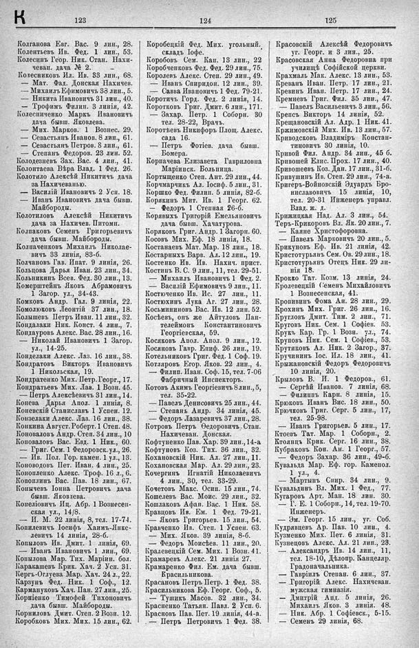

Лист источника 547
Скан

Распознанный текст
К 123 124 125
Колганова Евг. Вас. 9 лин., 28.
Колентьевъ Ив. Фед. 1 лин., 53.
Колесинъ Геор. Ник. Стан. Нахи-
чеван. дача № 2.
Колесниковъ Ил. Ив. 33 лин., 68.
— Мат. Фад. Донская Нахичев.
— Михаилъ Ефимовичъ 33 лин., 5.
— Никита Ивановичъ 31 лин., 40.
— Трофимъ Филип. 3 линія, 42.
Колесниченко Маркъ Ивановичъ
дача бывш. Яковлева.
— Мих. Марков. 1 Вознес. 29.
— Севастьянъ Иванов. 8 лин., 61.
— Севастьянъ Петров. 8 лин., 61.
— Степанъ Федоров. 23 лин. 52.
Колодезневъ Зах. Вас. 4 лин., 41.
Колонтаева Вѣра Влад. 1 Фед. 26.
Колотило Алексѣй Никитичъ дача
за Нахичеванью.
— Василій Ивановичъ 2 Усн. 18.
— Иванъ Ивановичъ дача бывш.
Майбороды.
Колотиловъ Алексѣй Никитичъ
дача за Нахичев. Питомн.
Колпаковъ Семенъ Григорьевичъ
дача бывш. Майбороды.
Колпаченковъ Михаилъ Николае-
вичъ 33 линія, 83-б.
Колчановъ Гав. Ипат. 9 линія, 26.
Кольцова Дарья Иван. 23 лин., 34.
Кольникинъ Всев. Фед. 30 лин., 13.
Комерштейнъ Яковъ Абрамовичъ
1 Загор. ул., 34-43.
Комковъ Андр. Гал. 9 линія, 22.
Комолюковъ Леонтій 37 лин., 18.
Колышевъ Петръ Иван. 11 лин., 32.
Кондалаки Ник. Конст. 4 лин., 7.
Кондауровъ Алекс. Вас. 28 лин., 16.
— Николай Ивановичъ 1 Загор.
ул., 14-25.
Конделаки Алекс. Лаз. 16 лин., 38.
Кондратовъ Викторъ Ивановичъ
1 Никольская, 19.
Кондратенко Мих. Петр. Георг., 17.
Кондратьевъ Мих. Лав. 1 Возн. 45.
— Петръ Алексѣевичъ 31 лин., 14.
Конева Дарья Апол. 1 линія, 8.
Коневскій Станиславъ 1 Успен. 12.
Конзелаки Алекс. Лаз. 16 лин., 38.
Конкина Август. Роберт. 1 Степ. 48.
Коноваловъ Андр. Степ. 34 лин., 10
Коноваловъ Вас. Евд. 1 Ник., 60.
— Григ. Сем. 1 Федоровск. ул., 26.
— Ив. Пол. Гор. камен. 1 ул., 13.
Коноводовъ Пет. Иван. 4 лин., 25.
Конопленко Алекс. Троф. 16 л., 6.
Копоплинъ Вас. Пав. 18 лин., 67.
Конычевъ Іонна Петровичъ дача
бывш. Яковлева.
Копеліовичъ Иц. Абр. 1 Вознесен-
ская ул., 14/8.
— И. М. 22 линія, 8, тел. 17-74.
Копилевичъ Іосифъ Хаимъ-Янке-
левичъ 14 линія, 28-б.
Копыловъ Ив. Дмит. 1 линія, 69.
— Иванъ Ивановичъ 1 лин., 69.
Копылова Мар. Тих. Маріин. бол.
Каракашевъ Крик. Хач. 2 Усп. 31.
Кергъ-Оглуева Мар. Хач. 24 л., 22.
Карзунъ Фед. Ник. 1 Соф., 12.
Кармануковъ Хач. Пан. 27 лин., 25.
Корніенко Тимофей Тихоновичъ
дача бывш. Майбороды.
Корниловъ Дмит. Степ. 2 Возн. 12.
Коробковъ Мих. Мих. 15 лин., 62.
Коробецкій Фед. Мих. угольный.
складъ Іофе.
Коробовъ Сем. Кап. 13 лин., 22
Коробченковъ Фед. Фед. 29 лин., 75.
Королевъ Алекс. Степ. 29 лин., 49.
— Иванъ Спиридон. 12 лин., 39.
— Савва Ивановичъ 1 Фед. 79-21.
Коротичъ Горд. Фед. 2 линія, 14.
Коротковъ Григ. Дмит. 6 лин., 171.
— Захар. Петр. 1 Соборн. 30
тел. 28-22, Врачъ.
Коротчевъ Никифоръ Площ. Алекс.
сада 16.
— Петръ Фотіев. дача бывш.
Бомера.
Корпачева Елизавета Гавриловна
Маріинск. Больница.
Кортыщенко Степ. Ант. 29 лин., 44.
Корчмарчикъ Ал. Іосиф. 5 лин., 31.
Коршко Фед. Филип. 5 линія, 82-б.
Корякинъ Мит. Ив. 1 Георг. 62.
— Федоръ 1 Стенная 26-б.
Корявыхъ Григорій Емельяновичъ
дача бывш. Хачатурова.
Коряковъ Григ. Андр. 1 Загорн. 60.
Косовъ Мих. Еф. 18 линія, 18.
Костанаевъ Мат. Мар. 18 лин., 18.
Костарныхъ Варв. Ал. 12 лин., 19.
Костенко Ив. Ив. Нахич. прист.
Костинъ В. С. 9 лин., 11, тел. 29-51.
— Михаилъ Ивановичъ 1 Фед. 2.
— Василій Ефимовичъ 9 лин., 11.
Костюченко Ив. Ис. 27 лин., 11.
Костюхинъ Лука Аг. 27 лин., 28.
Косьмининовъ Вас. Ив. 12 лин. 52.
Косѣевъ, онъ же Айтуловъ Пан-
телеймонъ Константиновичъ
Георгіевская, 59.
Косяковъ Апол. Апол. 9 лин., 12.
Косяновъ Гавр. Епиф. 26 лин., 19.
Котельниковъ Григ. Фед. 1 Соф. 19.
Котляровъ Егор. Яков. 22 лин., 4.
— Филип. Иван. Соф. 15, тел. 7-06
Фабричный Инспекторъ.
Котовъ Акимъ Георгіевичъ 8 лин., 5,
тел. 35-22.
— Павелъ Денисовичъ 25 лин., 44.
— Степанъ Андр. 34 линія, 45.
— Федоръ Лазаревичъ 37 лин., 28.
Котровъ Петръ Ѳеодоровичъ, Стан.
Нахичеван. Донская.
Кофтуненко Пав. Хар. 39 лин., 14-а
Кофтуновъ Коз. Тих. 36 лин., 32.
Кохановскій Ник. Ал. 27 лин., 11.
Кохановская Мар. Ал. 29 лин., 23.
Кочергинъ Игнатій Николаевичъ
4 лин., 30, тел. 33-29.
Кочетовъ Макс. Осип. 15 лин., 74.
Кошелевъ Вас. Моис. 29 лин., 32.
Кошлаковъ Афан. Вас. 1 Ник. 58.
Кравцовъ Ив. Ем. 1 Фед. 79-21.
— Яковъ Григорьев. 15 лин., 54.
Кравченко Ив. Степ. 1 Успен. 63.
— Мих. Яков. 39 линія, 8-б.
— Федоръ Моисѣев. 11 лин., 20.
Кралевецкій Сем. Мих. 1 Возн. 41.
Крамаревъ Алекс. 21 линія 27.
Крамаренко Фил. Ем. дача бывш.
Красильникова.
Красановъ Петръ Петр. 1 Фед. 38.
Красильникова Еф. Георг. Соф., 5.
— Тушикъ Масов. 32 лин., 34.
Красненко Татьян. Павл. 2 Усп. 6.
Красновъ Пав. Пет. 19 линія, 44-а.
— Петръ Петровичъ 1 Фед. 38.
Красовскій Алексѣй Федоровичъ
уг. Георг. и 3 лин., 25.
Красовская Анна Федоровна при
училищѣ Софійской церкви.
Крахмалъ Мак. Алекс. 13 лин., 53.
Креванъ Иван. Петр. 17 лин., 21.
Кревинъ Иван. Петр. 17 лин., 24.
Кремневъ Григ. Фил. 35 лин., 47.
— Павелъ Васильевичъ 3 лин., 56.
Крепсъ Викторъ 14 линія, 52.
Крещановскій Ал. Адр. 1 Ник. 41.
Кржимовскій Мих. Ив. 13 лин., 57.
Криводсковъ Владимиръ Констан-
тиновичъ 30 линія, 10.
Кривой Фил. Андр. 34 лин., 45 б.
Кривошей Елис. Прох. 17 лин., 40.
Кривошеевъ Коз. Дан. 17 лин., 31-б.
Кривушинъ Ив. Степ. 29 лин., 74-а.
Кригеръ-Войновскій Эдуардъ Бро-
ниславовичъ 15 линія, 10,
тел. 20-31. Инженеръ управл.
Влад. ж. д.
Крижицкая Над. Ал. 3 лин., 54.
Теръ-Крикоровъ Вл. Як. 20 лин., 7.
— Каяне Христофоровна.
— Павелъ Марковичъ 20 лин., 5.
Крикуновъ Еф. Ив. 21 линія, 42.
Кристотурьянъ Сем. Ов. 29 лин., 18.
Кристотурьянъ Отецъ Ник. 29 ли-
нія 18.
Крокко Тат. Козм. 13 линія, 24.
Кролевецкій Семенъ Михайловичъ
1 Вознесенская, 41.
Кропивинъ Фома Ан. 28 лин., 29.
Крохинъ Мих. Григ. 26 лин., 16.
Кругловъ Дмит. Тим. 2 лин., 71.
Круговъ Ник. Сем. 1 Софіев. 53.
Крукъ Кар. Гр. 1 Возн. ул., 74.
Круповъ Ник. Сем. 1 Софіев., 53.
Крутиковъ Ал. Ник. 2 Загор., 37.
Кручининъ Іос. Ил. 18 лин., 41.
Крыжановскій Федоръ Федоровичъ
10 линія, 20.
Крыловъ В. И. 1 Федоров., 61.
— Сергѣй Иванов. 7 линія, 68.
— Филиппъ Карп. 8 линія, 15.
Крюковъ Иванъ Вис. 18 лин., 50.
Крючковъ Григ. Серг. 5 лин., 17,
тел. 25-98.
— Иванъ Григорьев. 5 лин., 17.
Ктоевъ Тат. Мар. 1 Соборн., 2.
Ктоянцъ Крик. Серг. 16 лин., 38.
Кубраковъ Кон. Ан. 1 Георг., 57.
— Федоръ Захар. 36 лин., 49-б.
Кувальда Мар. Еф. гор. Каменол.
1 ул., 4.
— Мартынъ Спир. 34 лин., 9.
Кувальдинъ Вл. Мих. 1 Фед., 77.
Кугаровъ Арт. Ман. 18 лин. 30.
— I. Е. 1 Соборн., 14, тел. 19-70.
Инженеръ.
— Эм. Георг. 15 лин., уг. Соб.
Кудрявцевъ Ар. Пав. 10 лин., 4.
Кузменко Мих. Пет. 6 линія, 31.
Кузнецовъ Алекс. Ал. 21 лип., 23.
— Александръ Ив. 14 лин., 11,
тел. 18-10, Дѣлопр. Канцеляр.
Градоначальника.
— Гавріилъ Степан. 6 лин., 37.
— Григорій Алекс. Нахичеван.
мужская гимназія.
— Дмитрій Анд. 5 линія, 26.
— Михаилъ Яков. 3 линія. 48.
— Ник. Абр. 1 Софіевск., 5-15.
— Семенъ 29 линія, 68.